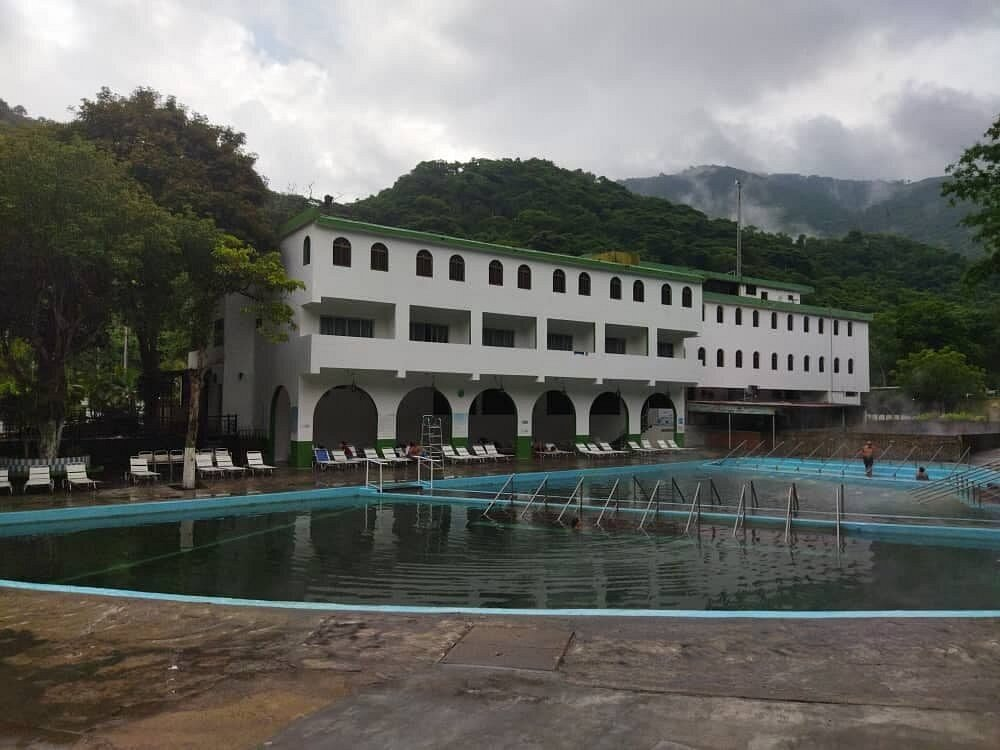
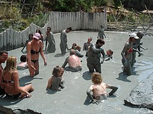
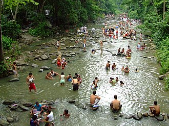
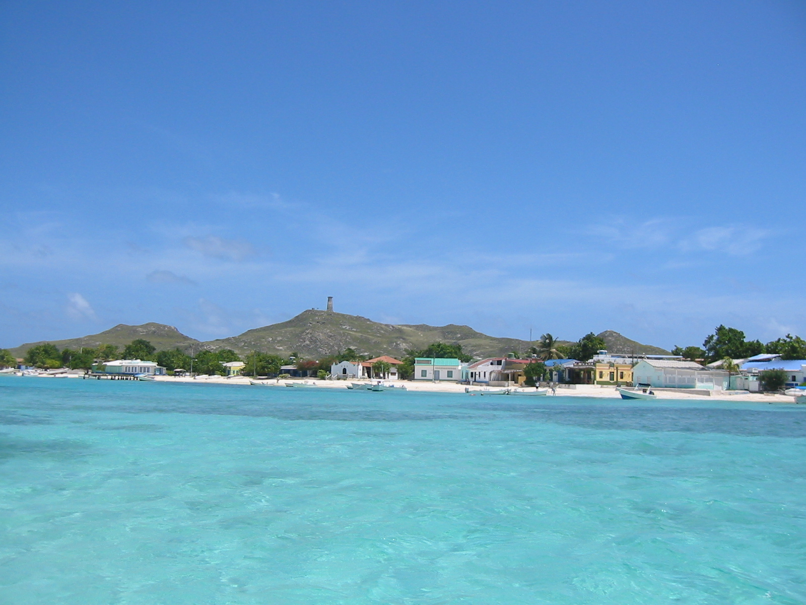

VENEZUELA'S THERAPEUTIC LEISURE
HOT SPRINGS OF LAS TRINCHERAS

Las Trincheras in Carabobo state is home to one of the hottest natural thermal springs in the world, with waters reaching up to 97°C. Rich in sulphur, sodium, and healing minerals, these springs have been used for centuries to treat skin conditions, joint pain, arthritis, and respiratory ailments. Visitors can choose from thermal soaking pools of varying temperatures, guided hydrotherapy sessions, mineral water baths, steam inhalation treatments, and direct sulphur therapy. Las Trincheras has earned a well-deserved reputation as one of South America's premier natural therapeutic destinations, drawing wellness seekers from across Venezuela and the wider Caribbean.
HEALING MUD OF LAGO DE MARACAIBO

The mineral-rich lake bed sediments of Lago de Maracaibo have long been prized for their remarkable therapeutic properties. The dark volcanic mud drawn from the lake's shores is packed with trace minerals, organic compounds, and natural nutrients that deeply nourish and heal the skin. Pelotherapy — the medical application of therapeutic mud — is practiced here to treat rheumatic conditions, chronic joint pain, and inflammatory skin disorders. A full session typically involves full-body mud wrapping, mineral absorption soaks, and skin rejuvenation rinses, leaving visitors feeling profoundly restored and revitalized after each treatment.
FOREST BATHING — HENRI PITTIER

Henri Pittier National Park, Venezuela's oldest national park and one of its most biodiverse, offers a profoundly restorative forest bathing experience within its ancient cloud forest canopy. The Japanese practice of Shinrin-yoku — deliberately immersing oneself in the sights, sounds, and scents of the forest — finds an extraordinarily rich setting here among towering trees, cascading waterfalls, and the constant symphony of over 500 bird species. Guided forest walks, nature meditation sessions, mindful breathing exercises, and waterfall immersions all combine to reduce stress, lower blood pressure, and restore a deep sense of inner calm in one of Venezuela's most serene natural sanctuaries.
THALASSOTHERAPY — LOS ROQUES

The pristine crystal-clear waters of Los Roques Archipelago provide one of the most breathtaking settings for thalassotherapy in the entire Caribbean. Thalassotherapy — the therapeutic use of seawater, marine mud, seaweed, and sea air — has been practiced for centuries as a natural remedy for fatigue, skin conditions, circulation problems, and muscular tension. The exceptionally pure, warm, mineral-rich waters of Los Roques are ideal for seawater soaking and saltwater flotation, while locally harvested seaweed wraps and marine mud treatments deeply nourish the skin. Simply breathing the clean, iodine-rich sea air of Los Roques is itself considered a form of natural respiratory therapy.